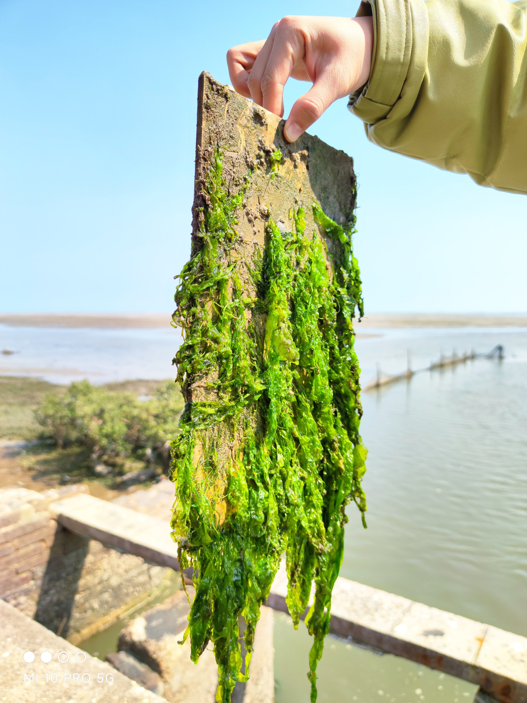
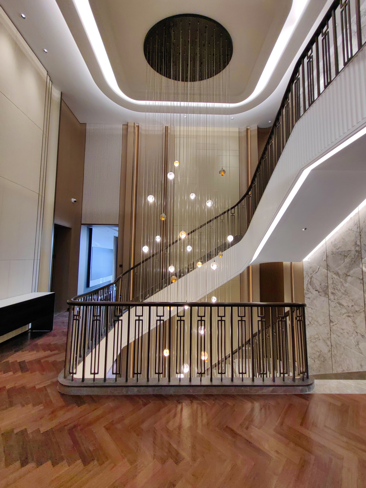
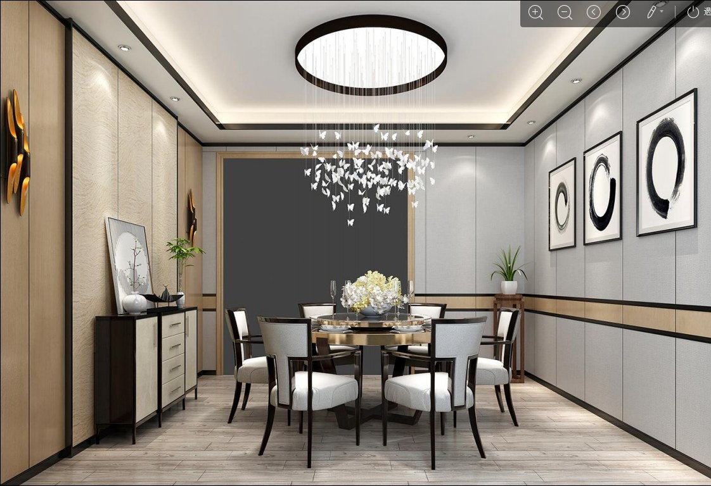
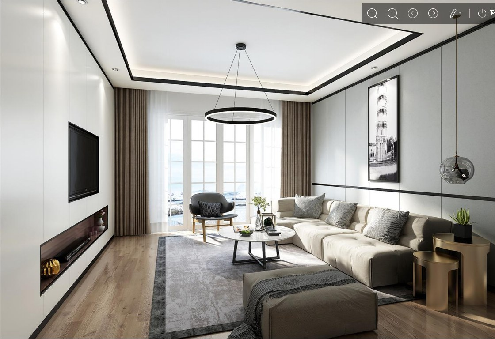
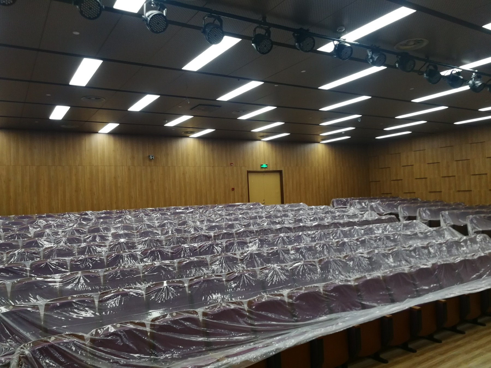
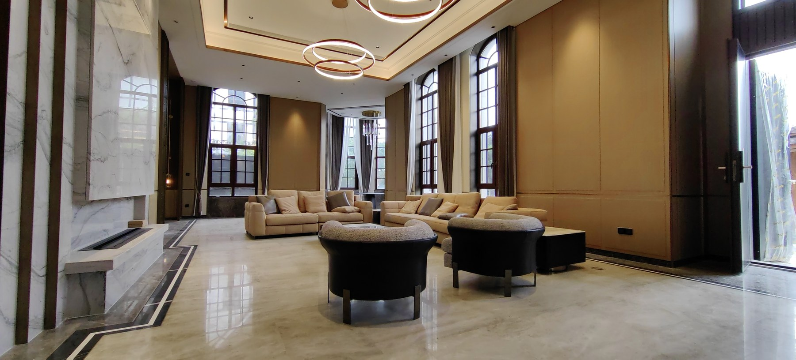
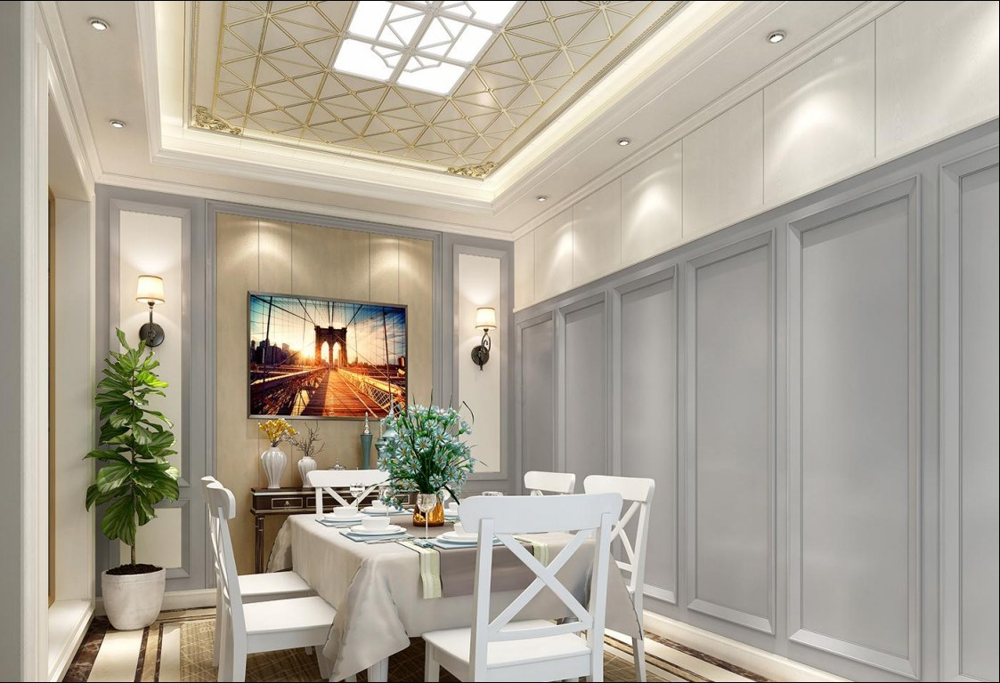
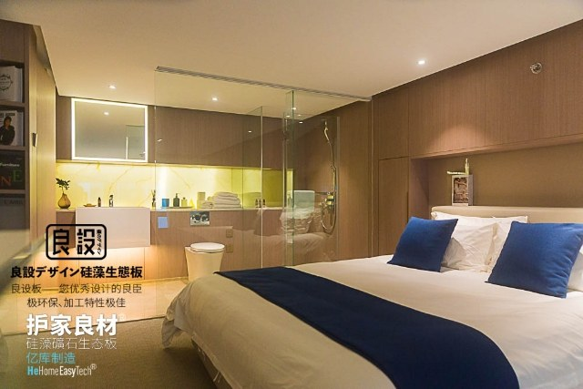
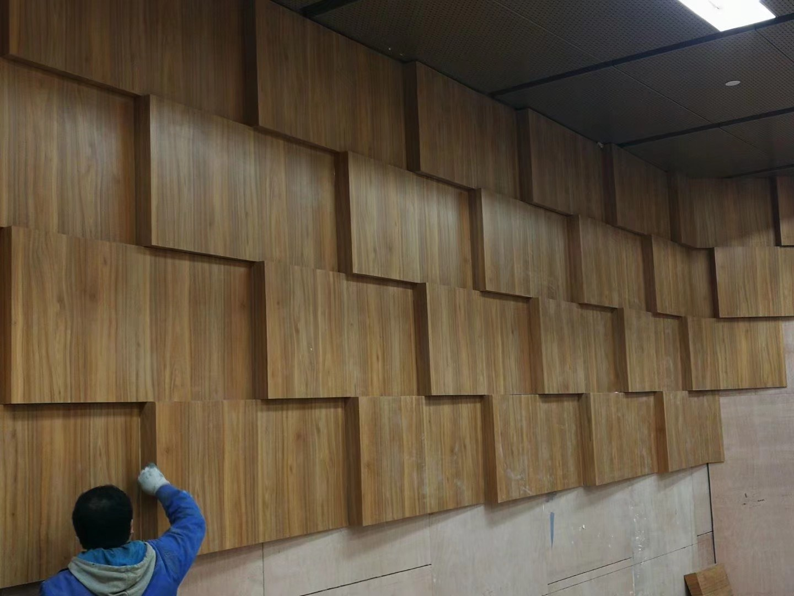

净醛、防水阻燃、抗菌防霉、降噪吸音与调湿，作为基础能力统一呈现。
Mineral intelligence for healthier spaces
让空间更安静、洁净、稳定，也让咨询更直接。
亿库围绕海洋硅藻矿物材料研发功能性板材，服务家装、酒店、学校、剧院、实验室与高等级公共空间。 这一次，我们把官网本身也升级成一套可发图、可问场景、可留资转人工的在线接待入口。



在线客服已接入
支持发图咨询板材、场景和案例
- 上传现场图判断是否适合卧室、酒店、剧院
- 根据需求推荐抗菌板、吸音板或调湿板
- 涉及报价、施工、合作时自动引导留资
Core capabilities
把材料性能说清楚，也把采购决策做轻。
基于现有资料，我们把亿库的核心卖点整理为面向空间效果的能力语言，让产品经理、设计师、甲方和渠道方都能快速读懂。
净醛与低 VOC
面向儿童房、卧室、医院、实验室与高标准内装，突出更洁净的基础环境能力。
防水阻燃
吸水膨胀率低，兼顾海滨、高湿、地下室与复杂空间的耐久性需求。
抗菌防霉
适合学校、医院、实验室和长期运营空间，支持更高频、更稳定的日常维护。
降噪吸音
围绕剧院、会场、音乐厅、教室和影音空间，强调高频吸收与低频衰减能力。
调湿与保温
为被动房、冷库和高端装配式空间提供更稳定的室内体感基础。
矿物环境与海洋材料研发路径
结合海洋硅藻矿物材料研发思路与现有检测文档，在官网上形成可信的技术叙事。
Product matrix
从基础内装，到特殊功能板，一次看懂亿库产品矩阵。
产品文案来自现有 PDF 资料，并改写成更适合官网浏览与在线咨询的结构。每张卡都预留了“直接联系客服”的入口。
海洋硅藻板
适合高端装配式内装、酒店、别墅、门墙柜与吊顶一体化场景。
- 净醛、抗菌、防水阻燃
- 可裁切、可雕刻、握钉力强
硅藻抗菌板
面向学校、医院、实验室等对洁净与交叉感染控制更敏感的空间。
- 聚焦抗菌、防霉与过敏源控制
- 适合长期高频使用环境
硅藻储能发光板
吸收太阳光和灯光并持续发光，适合海岛设施、栈道、指示提醒和夜间场景。
- 储光发光，可持续约 12 小时
- 兼顾防水阻燃与耐腐蚀
多孔消音隔热板
面向影院、体育馆、电视发射中心、高层建筑与高防火需求空间。
- 吸音、隔热、调节温湿度
- 适合被动房与大型公共建筑
硅藻蜂窝板
用于墙板、吊顶、浴室、家具、地下室、客船等，对结构轻量化与稳定性更友好。
- 防水阻燃，不易变形
- 适合复杂潮湿空间
硅藻调湿板
适合室内墙板打底、儿童家具与功能性家具，强调舒适性与室内基础健康。
- 调节温湿度，辅助净化
- 适合儿童与家庭环境
Scenario planning
官网不只是展示应用图，还要帮用户快速判断“这个空间到底适不适合我”。
酒店 / 会所 / 高端大堂
强调质感、耐久和长期运营维护。
适合突出防潮、防霉、防水阻燃以及大面积稳定饰面能力。

家装客厅
更适合追求洁净、安静和低气味的新房用户。
适合把净醛、调湿与表面完成度作为主卖点。
别墅餐厅 / 餐饮包间
需要兼顾高颜值饰面与基础功能性。
适合做门墙柜一体化与精装升级场景。

剧院 / 会场 / 教室
声学表现和防火等级更关键。
围绕吸音、余响控制和大型公共空间施工展开咨询。
Research and verification
把矿物材料研发、检测结果和咨询逻辑串成一条可信链路。
现有资料里已经给出了材料来源、技术路线、功能特点和典型场景。官网把这些内容拆成用户更容易理解的证据模块， 并支持从每个证据点直接跳转到在线咨询。
海洋硅藻蛋白石、贝壳粉等矿物基原料，强调天然、无味、低敏与环保叙事。
把抗菌率、吸水膨胀率、耐腐蚀与降噪表现转成采购和设计团队更容易用的决策信息。
支持“板材推荐”“图片咨询”“参考图请求”“顾问跟进”四类优先问法。
Classic cases
把资料里的空间图片重新组织成“可转化”的案例区。
不只展示“做过什么”，而是说明“为什么这个空间会选它”。案例区同样预埋联系客服入口，方便继续问材料、工艺和合作。

高等级公共空间
门厅、楼梯、立面与灯光关系复杂，更需要稳定饰面体系。
强调高完成度饰面、持续运营维护和空间气质控制。

精装家居
从墙面到顶面，兼顾洁净与质感。

酒店客房
强调舒适、安静和低气味体验。

会场论坛
服务声学、耐久与防火并行需求。
Consultation workflow
这个官网从第一天就按在线接待站来设计。
前端请求体、会话字段和媒体资产逻辑已经接入现有客服接口，适合继续扩展成正式在线接待。
会话标识
为每位访客自动生成会话身份，方便顾问连续理解上下文。
图片问答
支持 `imageDataUrl + imageName` 上传，适合让用户直接发现场图咨询。
媒体代理
本地营销图与客服返回资产图分开渲染，方便后续统一接入媒体代理。
留资转人工
当用户问价格、施工、合作和联系方式时，引导走留资表单与人工承接流程。
Contact and handoff
先在线接待需求，再把高意向线索交给团队。
适合渠道合作、项目报价、施工咨询、材料送样与场景判断。你可以直接提交需求，也可以先点击下方按钮先和客服沟通。